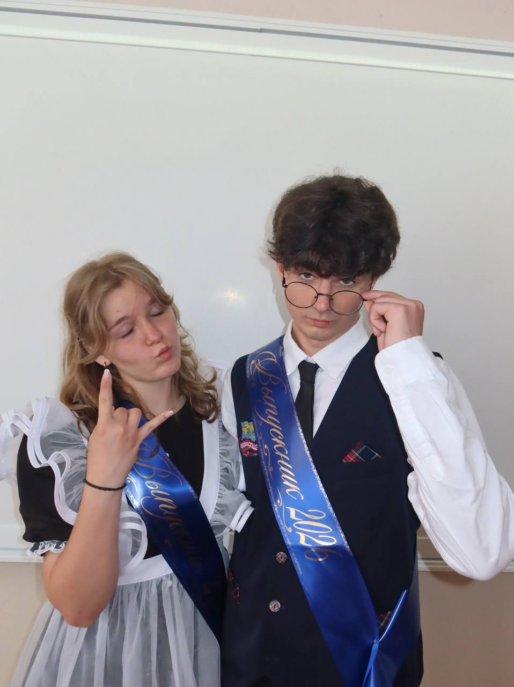
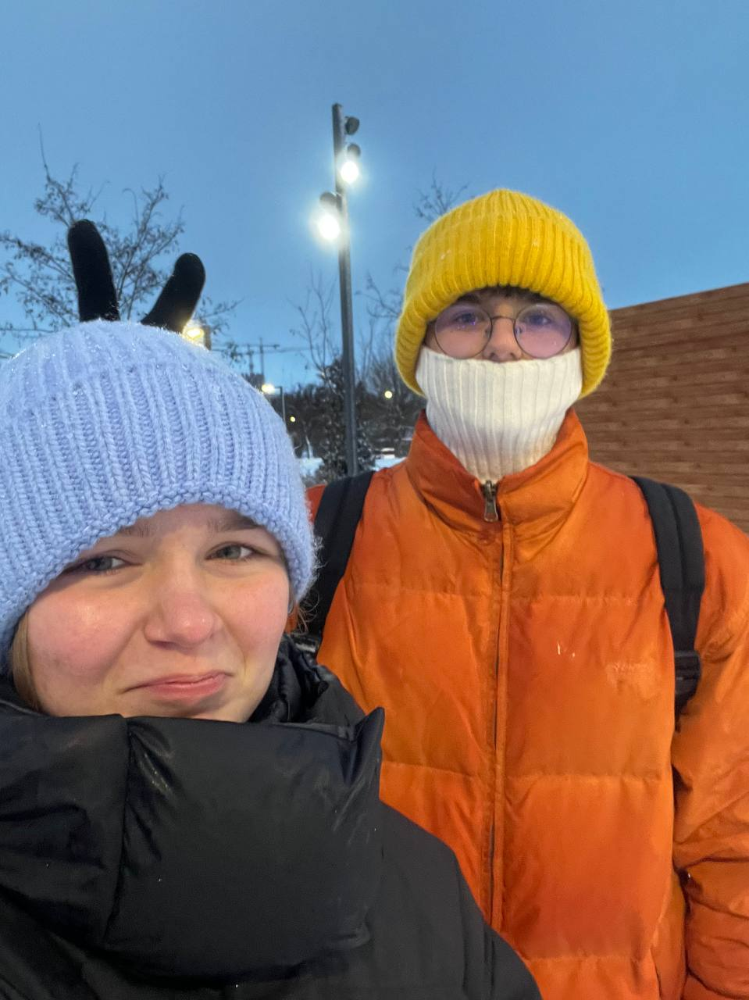
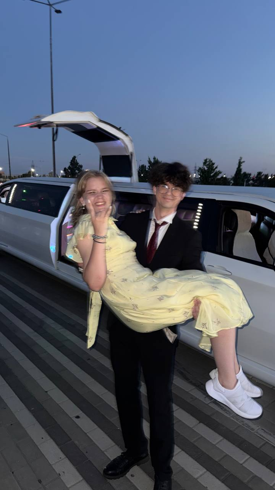
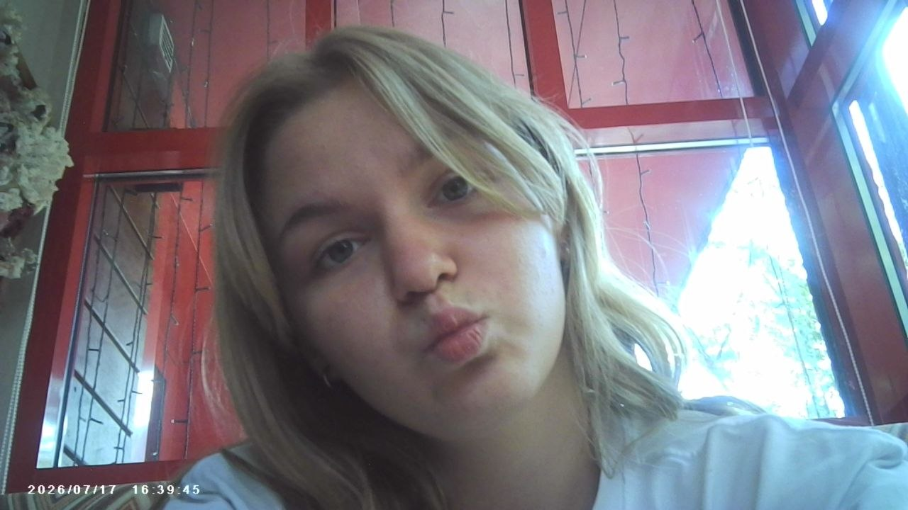

Наши моменты

Лучшее фото №1
Лучшее фото №1
Ну, мне нравится эта фотка
Лучшее фото №2
Лучшее фото №2
Ну, мне нравится эта фотка

Первая фотка
Первая фотка
Самый первый кадр, с которого началась наша история.

Вайбовые фотки
Вайбовые фотки
Тот самый момент, когда атмосфера говорит сама за себя.

Вайбовые фотки
Вайбовые фотки
Ещё один любимый кадр из нашей коллекции.
Забавная моська
Забавная моська
Даже с таким выражением лица ты самая лучшая.
Наш саундтрек
Музыка, которая ассоциируется у нас друг с другом
UBEL
Я буду ждать
Баста, Моя Мишель
Если я буду танцевать
1000 причин, почему я тебя люблю
Тут появится случайная причина из нашей копилки!
Продлеваем подписку на отношения?
В тариф включены: бесконечные обнимашки, вкусняшки и моя безграничная любовь.
Ура! Подписка успешно продлена!
Обещаю, дальше будет только лучше!